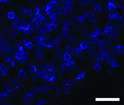
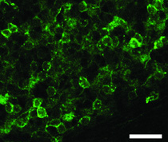
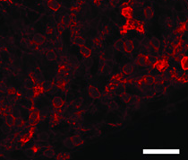
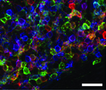

Lecture title slide: Whole-Cell Analysis. A link to the course YouTube playlist for this lecture.
Final Exam
Traditional in person final exam
Covers Practices until end, explicitly
Earlier lectures implicitly covered
Pay attention to questions to ponder
There will be a review lecture
Course housekeeping about the final exam: it is a traditional in-person exam; it covers Practices until the end explicitly, with earlier lectures implicitly covered; pay attention to the questions to ponder; and there will be a review lecture.
The DBTL cycle
More generally, we are discussing a subset of concerns related to the Test phase of the design build test learn cycle. When you go to do a genetic engineering experiment, you will start with Design. You will decide the composition of your strains in terms of what genes will used in the project, which combinations of those genes go into each strain composition, what regulatory elements you will add, and whether you want to put the genes on a plasmid or in the genome, and which plasmids and which sites in the genome. For each design, you will generate construction files describing how to go about fabricating the strains described by your composition designs. You then enter the build phase where you do all the oligo synthesis, gene synthesis, assembly, and transformation needed to construct your strain. You then enter test, the subject of our lecture today, in which you take measurements on the cells to extract information about the function of your design. In the Learn phase, the experimental data is interpreted and information is encapsulated for use in the next round of design. As of 2014, this process is all done in peoples heads. However, much of the software infrastructure needed to automated every step of this cycle is almost mature and will be deployed in early 2015.
The design-build-test-learn cycle drawn as four boxes joined by arrows running clockwise: Design, Build, Test, Learn, and back to Design. Today's lecture is the Test phase.
The Demonstration
System Characterization
Branding
A demonstration experiment involves testing a system in a context close to its real-world usage in a manner that highlights the its features, and demonstrates the absence of undesirable features. It involves system characterization of the complete system in a context similar to its real world usage. It is often disregarded as cheap advertising, and indeed is highly useful for branding an invention. However, the utility of a demonstration goes beyond this.
Section divider: The Demonstration. Two words name what a demonstration does — system characterization and branding.
The Demonstration
The Brainbow
Brainbow 3.1: Cai et al., Nat Methods 2013, PMID 23817127
The Brainbow
Jean Livet, Lichtman lab. First Prize, 2007 Olympus BioScapes. Cell Image Library CIL:40984, CC BY-NC-ND
Demonstrations are also common in the genetic engineering space. Often they employ beautiful images and videos to entice the reader’s attention. In this example, we are looking at a false-color rendering of the Brainbow. The Brainbow was a genetic circuit composed of three fluorescent proteins randomly expressed at several distinct expression levels. A transgenic animal encodes the device, and each neuron of its brain will express one combination of the fluorescent proteins at specific levels. Each neuron then has a unique signature relative to its neighbors in terms of the relative fluorescence on the three channels. When they do microscopy on slices of the brain material, they can quantify each channel, determine which combination of levels are present in each cell, and assign a color specific to that combination. They then false-color the image to generate what is shown here.
The Brainbow: a prize-winning micrograph of a Brainbow mouse brainstem, packed with axons that each glow their own hue — red, orange, yellow, green, cyan — so every neuron can be told apart from its neighbours.
The Brainbow



Cai et al., Nat Methods 2013, Fig. 2f–h. PMID 23817127
In reality, what the scientists probably saw under a microscope looked something like this. And they could have published that image, and the technical merit and utility of the technique is in no way compromised. They could have provided graphs showing statistics about how well they can distinguish two cells, or other more technical measures of performance. However, without the false coloring the ability to distinguish the neurons is not communicated, and the utility of the technique would be lost. It might be understandable to software, but this ability is not communicated without the false-color contrivance. Additionally, the technique is simply not as tantalizing and interesting as when they produce the beautiful image.
One field of cerebellar granule cells as the microscope records it: three separate fluorescence channels side by side, each a field of similar ring-shaped outlines. In any one channel, one neuron cannot readily be told from the next.
The Brainbow

Cai et al., Nat Methods 2013, Fig. 2e. PMID 23817127
The colorful version communicates to the reader not only that this labeling method allows the tracking of individual cells, but you also get an impression for how well this methodology can distinguish the axons of one cell from another.
The same field with its three channels merged into one colour image, immediately after the separate channels, so the difference in what each communicates is visible side by side in time.
Biofuel-Producing Yeast
Build a biorefinery
Put the yeast into a bioreactor
Give it some cellulose-derived carbon source
Collect the biofuel
Show how much it cost to make a barrel of biofuel
or…
Run a car on biofuel
or…
Show images of cultures with a layer of biofuel floating on the surface
or…
Light a culture of the bacteria on fire
Let’s look at a more current example. Suppose we want to make Biofuel-producing yeast. For technical characterization, we will need to build a biorefinery, put the bugs into it and grow it up at scale using cellulose or sugar as a carbon source, collect the biofuel, and then compute the cost of producing it. If I were an investor, I would want to know this quantitative technical information to be confident that the company can produce a commercially-viable product. However, it’s just going to look like a page of numbers to the non-expert. Additionally, the company might be hiding details such as the presence of a contaminant in the fuel that makes your car smell like rotten eggs.
The technical characterization of a biofuel yeast, listed as five steps: build a biorefinery, put the yeast in a bioreactor, give it a cellulose-derived carbon source, collect the biofuel, and show what a barrel cost to make.
Artificial Pancreas Cells
Find a mouse diabetes model
Treat it with the Artificial Pancreas cells
Compare treated mouse insulin levels to those of untreated mice
or…
Show happy treated mice running on a treadmill
Here’s another example. Suppose you want to make genetically-engineered cells to replace those that have been killed in patients with diabetes. The technical experiment would involve identifying a mouse diabetes model, performing the treatment with the engineered cells, and then quantifying insulin levels in treated and untreated mice.
The technical experiment for artificial pancreas cells: find a mouse diabetes model, treat it with the cells, and compare insulin levels in treated and untreated mice.
Designing a Demonstration
What is the closest experiment you can get to the “real world” use of this organism?
What demonstration experiments are necessary to show that “unwanted” behavior is absent in the system?
Is there any interesting in a sensory way (visual, smell, audible, etc.) that will illustrate the functioning of the system?
When developing a new technology, it will always be valuable to think about what experiments would make good demonstrations. There will always be additional, more technical experiments that you need to perform to show that specific attributes of your system work as intended, but this is no substitute for the demonstration. You should ask yourself, What is the closest experiment you can get to the “real world” use of this organism?
What demonstration experiments are necessary to show that “unwanted” behavior is absent in the system?
Is there any interesting in a sensory way (visual, smell, audible, etc.) that will illustrate the functioning of the system?
Three questions to ask when designing a demonstration: what is the closest experiment to the real-world use of the organism; what demonstrations show that unwanted behaviour is absent; and is there anything sensory — visual, smell, audible — that will illustrate the system working.
Questions to ponder
What are some good demonstration experiments for…
A sugarcane plant that grows on seawater
A plant that grows in zero-G
An engineered car-T cell for solid tumors
Grow a sugarcane plant on seawater, then let the user taste the cane relative to ones grown on regular water
Put a video camera on a plant growing on the space station
Take a mouse, give it cancer, inject with the car-T, and show the mouse after the tumors are cleared moving about
Questions to ponder. What are some good demonstration experiments for a sugarcane plant that grows on seawater, a plant that grows in zero-G, and an engineered car-T cell for solid tumors.